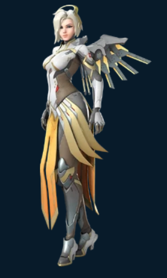

OW2 Stadium - Générateur de stratégie
Rôle :
Soutien
DPS (à venir)
Tank (à venir)
Héros :
ange
moira
Style de jeu :
Priorité soins
Priorité dégâts
Soin sans utiliser l'ultime
Dégâts sans utiliser l'ultime
Points disponibles par manche :
Renseigner par manche le montant de points globaux disponibles.
Manche 1 :
Manche 2 :
Manche 3 :
Manche 4 :
Manche 5 :
Manche 6 :
Manche 7 :
Générer les recommandations
